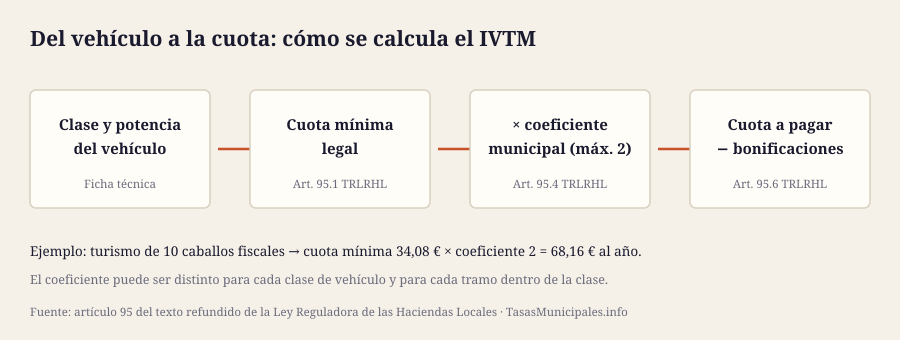
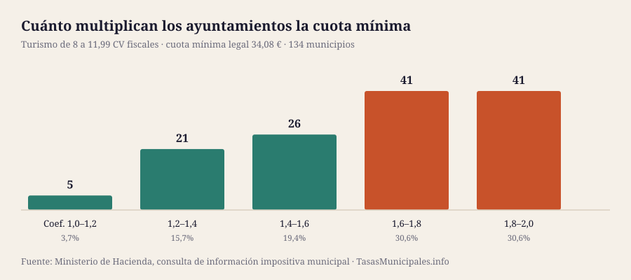

Qué es el impuesto de circulación y quién lo paga
El impuesto sobre vehículos de tracción mecánica (IVTM), que casi todo el mundo llama «impuesto de circulación» o «numerario», es un tributo municipal que grava la titularidad de un vehículo apto para circular por vías públicas. Lo regula el texto refundido de la Ley Reguladora de las Haciendas Locales y lo cobra tu ayuntamiento, no la DGT ni Hacienda.
El sujeto pasivo es quien figura como titular en el permiso de circulación (art. 94). Ojo a la consecuencia práctica: si vendiste el coche pero no se tramitó el cambio de titularidad, el recibo te sigue llegando a ti, porque el ayuntamiento se guía por el registro de la DGT y ahí el titular sigues siendo tú.
Cómo se calcula: cuota mínima y coeficiente municipal
El IVTM no se calcula sobre el valor del coche ni sobre sus emisiones. El artículo 95.1 fija un cuadro de cuotas mínimas según la clase de vehículo y un parámetro técnico distinto en cada clase:
- Turismos y tractores: los caballos fiscales (potencia fiscal), un dato que figura en la ficha técnica y que no coincide con los caballos de potencia del motor.
- Autobuses: el número de plazas.
- Camiones, remolques y semirremolques: los kilos de carga útil.
- Motocicletas y ciclomotores: la cilindrada.
Sobre esa cuota mínima, el ayuntamiento puede aplicar un coeficiente que no puede superar el 2 (art. 95.4). Y puede fijar un coeficiente distinto para cada clase de vehículo, e incluso para cada tramo dentro de una misma clase. Si no aprueba ninguno, se paga la cuota mínima tal cual (art. 95.5).
De ahí sale toda la variación entre municipios: no hay diferencias de método, solo de coeficiente. Por eso comparar el IVTM entre ayuntamientos es limpio, a diferencia del IBI, donde el valor catastral distorsiona cualquier comparación de tipos.
Cuadro de tarifas: mínimo legal, tope y lo que se cobra de verdad
Las dos primeras columnas son la ley; las dos últimas, lo que hemos encontrado en los 134 municipios de la guía según los datos que el Ministerio de Hacienda publica para el ejercicio 2025.
| Vehículo | Cuota mínima (art. 95.1) | Tope legal (×2) | Mediana observada | Máximo observado |
|---|---|---|---|---|
| Turismos | ||||
| De menos de 8 caballos fiscales | 12,62 € | 25,24 € | 20,88 € | 25,24 € |
| De 8 a 11,99 caballos fiscales | 34,08 € | 68,16 € | 57,95 € | 68,16 € |
| De 12 a 15,99 caballos fiscales | 71,94 € | 143,88 € | 124,85 € | 143,88 € |
| De 16 a 19,99 caballos fiscales | 89,61 € | 179,22 € | 161,30 € | 179,22 € |
| De 20 caballos fiscales en adelante | 112,00 € | 224,00 € | 202,00 € | 224,00 € |
| Motocicletas y ciclomotores | ||||
| Ciclomotores | 4,42 € | 8,84 € | 7,87 € | 8,84 € |
| Motocicletas hasta 125 cc | 4,42 € | 8,84 € | 7,87 € | 8,84 € |
| Motocicletas de más de 125 hasta 250 cc | 7,57 € | 15,14 € | 13,44 € | 15,14 € |
| Motocicletas de más de 250 hasta 500 cc | 15,15 € | 30,30 € | 26,76 € | 30,30 € |
| Motocicletas de más de 500 hasta 1.000 cc | 30,29 € | 60,58 € | 53,93 € | 60,58 € |
| Motocicletas de más de 1.000 cc | 60,58 € | 121,16 € | 108,44 € | 121,16 € |
| Camiones | ||||
| De menos de 1.000 kg de carga útil | 42,28 € | 84,56 € | 71,55 € | 84,56 € |
| De 1.000 a 2.999 kg | 83,30 € | 166,60 € | 140,97 € | 166,60 € |
| De más de 2.999 a 9.999 kg | 118,64 € | 237,28 € | 201,34 € | 237,28 € |
| De más de 9.999 kg | 148,30 € | 296,60 € | 251,80 € | 296,60 € |
| Autobuses | ||||
| De menos de 21 plazas | 83,30 € | 166,60 € | 140,40 € | 166,60 € |
| De 21 a 50 plazas | 118,64 € | 237,28 € | 199,83 € | 237,28 € |
| De más de 50 plazas | 148,30 € | 296,60 € | 247,30 € | 296,60 € |
| Tractores | ||||
| De menos de 16 caballos fiscales | 17,67 € | 35,34 € | 29,54 € | 35,34 € |
| De 16 a 25 caballos fiscales | 27,77 € | 55,54 € | 46,76 € | 55,54 € |
| De más de 25 caballos fiscales | 83,30 € | 166,60 € | 140,06 € | 166,60 € |
| Remolques y semirremolques | ||||
| De más de 750 y menos de 1.000 kg de carga útil | 17,67 € | 35,34 € | 29,37 € | 35,34 € |
| De 1.000 a 2.999 kg | 27,77 € | 55,54 € | 46,89 € | 55,54 € |
| De más de 2.999 kg | 83,30 € | 166,60 € | 139,17 € | 166,60 € |
El cuadro de cuotas mínimas puede modificarse por la Ley de Presupuestos Generales del Estado (art. 95.2). Fuente de las columnas observadas: consulta de información impositiva municipal.
Cuánto cuesta el mismo coche según dónde vivas
Para el turismo más habitual, el de 8 a 11,99 caballos fiscales, la cuota mínima legal es de 34,08 € y el tope de 68,16 €. Entre los 134 municipios con dato:
- La mediana está en 57,95 €, es decir un coeficiente medio de 1,70.
- 3 municipios cobran la cuota mínima legal o algo muy próximo: renuncian a subir este impuesto.
- 12 están en el tope de la ley, con el coeficiente 2 agotado.
- El más caro es Ejea de los Caballeros (68,16 €) y el más barato O Porriño (34,08 €). La diferencia por el mismo coche es de 34,08 € al año.

| Municipio | Provincia | Cuota anual | Coeficiente |
|---|---|---|---|
| Los 12 más caros | |||
| Ejea de los Caballeros | Zaragoza | 68,16 € | 2,00 |
| Castro-Urdiales | Cantabria | 68,16 € | 2,00 |
| Laredo | Cantabria | 68,16 € | 2,00 |
| Ciudad Real | Ciudad Real | 68,16 € | 2,00 |
| Valladolid | Valladolid | 68,16 € | 2,00 |
| Vigo | Pontevedra | 68,16 € | 2,00 |
| Alfaro | La Rioja | 68,16 € | 2,00 |
| Caravaca de la Cruz | Murcia | 68,16 € | 2,00 |
| Murcia | Murcia | 68,16 € | 2,00 |
| Santander | Cantabria | 67,96 € | 1,99 |
| Monzón | Huesca | 67,82 € | 1,99 |
| Salamanca | Salamanca | 67,76 € | 1,99 |
| Los 12 más baratos | |||
| Monforte de Lemos | Lugo | 43,92 € | 1,29 |
| Verín | Ourense | 43,62 € | 1,28 |
| Alhama de Murcia | Murcia | 42,85 € | 1,26 |
| Jaca | Huesca | 42,60 € | 1,25 |
| Jerez de los Caballeros | Badajoz | 42,60 € | 1,25 |
| Navalmoral de la Mata | Cáceres | 42,60 € | 1,25 |
| Carballo | A Coruña | 40,90 € | 1,20 |
| Tui | Pontevedra | 40,56 € | 1,19 |
| Sarria | Lugo | 37,49 € | 1,10 |
| Lalín | Pontevedra | 34,08 € | 1,00 |
| O Carballiño | Ourense | 34,08 € | 1,00 |
| O Porriño | Pontevedra | 34,08 € | 1,00 |
Tabla ordenable con los 134 municipios y todas las clases de vehículo →
Vehículos exentos (art. 93)
La ley exime del impuesto, sin que el ayuntamiento pueda decidir lo contrario:
- Los vehículos oficiales del Estado, comunidades autónomas y entidades locales adscritos a la defensa nacional o a la seguridad ciudadana.
- Los de representaciones diplomáticas y organismos internacionales, en las condiciones del artículo.
- Los que resulten exentos por tratados o convenios internacionales.
- Las ambulancias y demás vehículos destinados directamente a la asistencia sanitaria o al traslado de heridos o enfermos.
- Los vehículos para personas de movilidad reducida y los matriculados a nombre de personas con discapacidad para su uso exclusivo, con grado reconocido igual o superior al 33%. Aquí hay un límite que se pasa por alto: no cabe la exención por más de un vehículo simultáneamente, y hay que solicitarla aportando el certificado y justificando el destino del vehículo.
- Los autobuses y microbuses del transporte público urbano con más de nueve plazas, incluida la del conductor.
- Los tractores, remolques, semirremolques y maquinaria provistos de Cartilla de Inspección Agrícola.
Bonificaciones que puede aprobar tu ayuntamiento
Además de las exenciones, el artículo 95.6 permite que la ordenanza regule tres bonificaciones sobre la cuota, ya esté incrementada por el coeficiente o no:
| Bonificación | Tope legal | Base |
|---|---|---|
| Según la clase de carburante, por su incidencia en el medio ambiente | Hasta 75% | Art. 95.6.a |
| Según las características del motor y su incidencia en el medio ambiente | Hasta 75% | Art. 95.6.b |
| Vehículos históricos o con 25 años o más de antigüedad | Hasta 100% | Art. 95.6.c |
Las dos primeras son la vía por la que muchos ayuntamientos bonifican eléctricos, híbridos y de gas: la ley no habla de «coche eléctrico», habla de carburante y de características del motor, y es la ordenanza la que concreta qué tecnologías entran y con qué porcentaje.
La antigüedad de 25 años se cuenta desde la fecha de fabricación y, si no se conoce, desde la primera matriculación o, en su defecto, desde que se dejó de fabricar ese tipo o variante. Y sí, puede llegar al 100%: hay municipios donde un coche de 25 años no paga IVTM.
Cuándo se paga y cuándo se prorratea
El período impositivo es el año natural y el impuesto se devenga el 1 de enero (art. 96). Quien sea titular ese día paga el año completo, aunque venda el coche en febrero.
La cuota solo se prorratea por trimestres naturales en tres casos:
- Primera adquisición del vehículo: el período empieza el día de la adquisición.
- Baja definitiva.
- Baja temporal por sustracción o robo, desde el momento en que se produce la baja en el registro correspondiente.
Fuera de esos tres supuestos no hay devolución de la parte del año, y en particular una compraventa entre particulares no prorratea nada: quien lo pague y cómo se reparta es cosa del contrato entre las partes.
Qué hacer si el recibo está mal
Los errores más frecuentes son de datos del vehículo (clase, potencia fiscal, cilindrada) o de titularidad después de una venta o una baja. El cauce es el mismo que en el resto de tributos locales:
- Recurso de reposición ante el ayuntamiento u organismo que gestione la recaudación, en el plazo de un mes desde la notificación.
- O reclamación económico-administrativa, en los municipios que tienen órgano propio para resolverlas.
- Si el error está en los datos del vehículo, el arreglo de fondo está en la DGT: mientras el registro diga otra cosa, el ayuntamiento seguirá liquidando con ese dato.
- Salvo que se suspenda con garantía, conviene pagar dentro del plazo mientras se reclama para no sumar los recargos del artículo 28 de la Ley General Tributaria. Cómo funcionan esos recargos →
El IVTM en tu municipio
En la ficha de cada uno de los 134 municipios publicamos su tarifa completa: las 24 cuotas por clase de vehículo tal y como las recoge el Ministerio de Hacienda, junto con el tipo del IBI, el ICIO y los coeficientes de plusvalía.
Buscar mi municipio entre los 134 → · Ver por comunidad autónoma →
Lo que la consulta del Ministerio no publica son las exenciones y bonificaciones de cada ordenanza, que en el IVTM son especialmente relevantes. Para eso hay que leer la ordenanza fiscal: en cada ficha enlazamos el organismo que la gestiona.